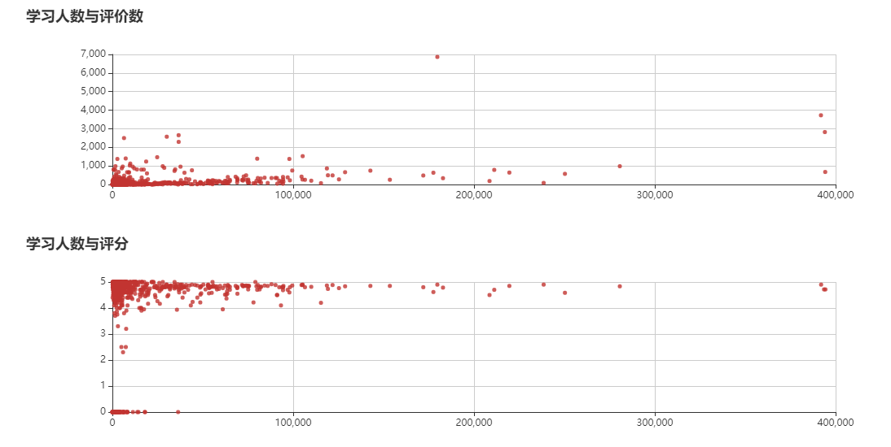

从三大 Mooc 平台：黑马培训 、慕课网 、中国大学MOOC 中抓取免费的课程的四个大类：Java、C\C++#、Python、网络安全 下课程的基本信息，存入 Mysql 数据，然后在 Django Web 上做一个展示。该 Web 具有注册、登录、注销、修改密码、重置密码等功能，具体包括分类展示不同类别的课程列表信息、用户界面和收藏课程信息、可视化分析页面等。
环境
django 2.2
Python 3.7
Mysql 8.0
创建一个 Django 项目
用户模块 参考教程 What is Django? 、model Fundamentals 、Other parts of principle 、Advanced Concepts 、User module ，按照这些文章下来之后，我们就可以得到如下的页面。
如果你不想去执行上面的文章的操作，你可以直接下载 Github A Complete beginner`s Guide to Django 的文件，着重看一下 User module 即可，这有这部分是主要讲解用户模块的内容，然后修改数据库的设置迁移数据到我们的数据库即可
然后我们来迁移数据
就可以在数据库查询到新建好的表
我们可以来测试下功能，点击右上角的 Signup ，进入注册页面注册账户
注册好了之后即会在页面上显示我们的账户名。我们还可以选择进入用户页面，会显示一些基本信息以及收藏的课程信息。下拉菜单还有修改密码、注销等等。
我们选择注销，点击 Login 按钮。在这个页面我们可以跳转到注册页面，还可以选择忘记密码，本项目支持发送邮件重置密码。
选择忘记密码，需要你输入之前注册时输入的邮箱，如果你输入的邮箱在数据库不存在，则不会给你发送重置邮件
点击发送之后跳转至提醒发送成功邮件页面
我们进入到邮箱 查看收到的邮件
点击链接就可以进入到重置密码的页面，注意，我们并没有添加域名，你只能在当前测试环境中测试是否可以修改密码。如果你想要修改发送邮件的账号，请在设置中进行修改即 myproject/settings.py,如下页面
点击链接之后 Django 会判断该链接是否是合适的链接，这个是 Django 内置的模块实现。当我们修改密码之后，如果密码过于简单会再次提醒你密码过于常见，修改一个难度合适的代码之后，会跳转到成功修改页面，会提供跳转至登录页面。
Boards 页面 我们现在来开发模块信息页面，因为我们的页面上没有任何的内容，我们进入数据库添加一些信息
再次来到首页，发现我们的首页添加了一些信息。
将我们不需要的内容进行一个删减,最后的目录如下
下面会将 Django MTV 的流程进行一个详细的讲解
设置 我们将 myproject/settings.py 中我们改动的设置进行一个列举,因为我们只需要用到两个 APP，所以大家注意后续我们并不需要对设置文件再进行操作1 2 3 4 5 6 7 8 9 10 11 12 13 14 15 16 17 18 19 20 21 22 23 24 25 26 27 28 29 30 31 32 33 34 35 #... INSTALLED_APPS = [ 'django.contrib.admin', 'django.contrib.auth', 'django.contrib.contenttypes', 'django.contrib.sessions', 'django.contrib.messages', 'django.contrib.staticfiles', 'widget_tweaks', # 新建的两个app 'boards', 'accounts', ] LANGUAGE_CODE = 'zh-hans' # 语言 TIME_ZONE = 'Asia/Shanghai' # 时区 # 跳转设置 无论从什么链接进入都会跳转到首页 LOGOUT_REDIRECT_URL = '/' LOGIN_REDIRECT_URL = '/' # 未登录用户进行收藏操作会提醒转到登录页面 LOGIN_URL = 'login' # 重置密码邮件部分 EMAIL_HOST = 'smtp.qq.com' EMAIL_PORT = 25 #发件箱的smtp服务器端口 EMAIL_HOST_USER = 'aaa@qq.com' # 你的 QQ邮箱 账号 EMAIL_HOST_PASSWORD = 'sadsakdjskaj'#QQ邮箱授权码 EMAIL_USE_TLS = True # 这里必须是 True，否则发送不成功 EMAIL_FROM = 'aaa@qq.com' # # 你的 QQ邮箱 账号 DEFAULT_FROM_EMAIL = 'aaa@qq.com'# 你的 QQ邮箱 账号
Urls myproject/urls.py 1 2 3 4 5 6 7 8 9 10 11 12 13 14 15 16 17 18 19 20 21 22 23 24 25 26 27 28 29 30 31 32 33 34 35 36 37 38 39 40 41 42 43 44 45 46 47 48 49 50 51 52 53 54 55 56 57 58 59 60 61 62 # 后台管理模块 from django.contrib import admin # 路由匹配模块 from django.urls import path,re_path # 注册路由模块 from django.contrib.auth import views as auth_views # 从两个 app 中引入视图函数 from boards import views # 做一个重命名 避免产生冲突 from accounts import views as accounts_views urlpatterns = [ # 以下部分全部是用户部分的路由 path('admin/', admin.site.urls), # 注册 path('signup/',accounts_views.signup,name='signup'), # 登出 path('logout/', auth_views.LogoutView.as_view(), name='logout'), # 登录 path('login/',auth_views.LoginView.as_view(template_name='login.html'), name='login'), # 重置密码 path('reset/', auth_views.PasswordResetView.as_view( template_name='password_reset.html', email_template_name='password_reset_email.html', subject_template_name='password_reset_subject.txt' ),name='password_reset'), # 重置成功界面 path('reset/done/', auth_views.PasswordResetDoneView.as_view(template_name='password_reset_done.html'), name='password_reset_done'), # 重置链接路由 我们采用 re_path 的匹配方法来进行 re_path('^reset/(?P<uidb64>[0-9A-Za-z_\-]+)/(?P<token>[0-9A-Za-z]{1,13}-[0-9A-Za-z]{1,20})/$', auth_views.PasswordResetConfirmView.as_view(template_name='password_reset_confirm.html'), name='password_reset_confirm'), # 重置密码成功界面 path('reset/complete/', auth_views.PasswordResetCompleteView.as_view(template_name='password_reset_complete.html'), name='password_reset_complete'), # 修改密码界面 path(r'settings/password/', auth_views.PasswordChangeView.as_view(template_name='password_change.html'), name='password_change'), # 修改密码成功界面 path(r'settings/password/done/', auth_views.PasswordChangeDoneView.as_view(template_name='password_change_done.html'), name='password_change_done'), # 以下部分为页面路由 # 首页路由 # 调用views.home path('', views.home, name='home'), # 分类课程信息路由 # 修改为当前主流的 path 适配方法 # 因为我们有4个分类 所以直接将 pk 传入到 view 视图 然后匹配得到一个分类的数据返回给页面 # 所有的分类都是同一个页面但是不同的数据渲染 这都是通过在 视图函数中实现的 # 后面的 <int:pk> 值是可变的 具体的用法后续可以看 view path('boards/<int:pk>/',views.board_courses_2,name='board_courses_2'), # 跳转到数据可视化的页面 调用 data_analysis 的视图 name = 'data_analysis' # 这个 name 我们需要填写在 HTML 中 <a href="{% url 'data_analysis'%}">Data Analysis</a> # 实现跳转效果 path('data_analysis/',views.data_analysis,name='data_analysis'), ]
Models boards/models.py 1 2 3 4 5 6 7 8 9 10 11 12 13 14 15 16 17 18 19 20 21 22 23 24 25 26 27 28 29 30 31 32 33 34 35 36 37 38 39 40 41 42 43 44 45 46 47 48 49 50 51 52 53 54 55 56 57 58 59 60 61 62 63 64 65 66 67 68 from django.db import models # 我们不构建用户模型 直接继承 Django 内置模块 from django.contrib.auth.models import User # Create your models here. ''' 为什么每个类都需要继承 models.Model 因为所有的模型都是 django.db.models.Field 子类 这样每个类都被转换为数据库内的表 每个字段由 django.db.models.Field子类的实例表示 它们并将会被转换为数据库的列 字段 CharField、DataTimeField等等 都是 django.db.models.Filed的子类 有些字段需要参数 例如 CharField 我们应该设定一个 max_length 这些信息将用于创建数据库列 Django 需要知道数据库列需要多大 该 max_length 参数也将被 Django Forms API 用来验证用户输入 related_name 是可选项 但是如果我们不为它设置一个名称 Django会自动生成它：（class_name)_set 如在 Board 模型中，所有的 Topic 列表将用 topic_set 属性表示 如果设置 related_name ='+' 指示 Django 我们不需要这种反向关系，所以它会被忽略 也就是说我们不需要关系用户修改哪些帖子 ''' # 模块 class Board(models.Model): # unique= True 强调数据库级别字段的唯一性 # 必须添加 default 否则会报错告诉你必须添加默认值 name = models.CharField(max_length=30,unique=True,default='test') description = models.CharField(max_length=100) def __str__(self): return self.name # 帖子 class Courses(models.Model): # 设置课程链接字段 长度为250 唯一主键 默认值为0 course_url = models.CharField(max_length=250,unique=True,default='0') # 评价数 commitsnum = models.IntegerField() # 课程名 coursename = models.CharField(max_length=50) # 学习过人数 learnednums = models.IntegerField() # 评分 score = models.FloatField() # 教师名 teachername = models.CharField(max_length=10) # 分类 direction = models.CharField(max_length=30) # 图片路径 放在 static 下 默认值为空 imgpath = models.CharField(max_length=50,default='') # Board 可以通过 related_name 参数用于创建反向关系 # 外键 可以通过外键来访问所属的上层分类和跟踪用户收藏信息 board =models.ForeignKey(Board,related_name='course',on_delete=models.CASCADE) # 自定义字段 收藏 外键与课程相连接 # 跨 APP 构建外键 使用 to='app.models' # MantTOMany 是多对多 多用户对多课程信息 # related_name 是用来做反向查询的名字 # SET_NULL 意思是一个person删除了，其对应的所有books要删除 # 生成之后产生了一个中间表 表里有两个字段 一个是 courses_id 一个是 user_id favorite = models.ManyToManyField(User, related_name='favorite')
修改好 Model 之后，我们需要执行 python manage.py makemigrations 和 python manage.py migrate
可以得到如下两个表
我们有四个分类，所以直接在数据库中插入了四个分类
View boards/views.py 1 2 3 4 5 6 7 8 9 10 11 12 13 14 15 16 17 18 19 20 21 22 23 24 25 26 27 28 29 30 31 32 33 34 35 36 37 # 简单函数 为 django 的视图函数中返回浏览器响应的一些方法 # render 返回渲染好的 HTMl 页面 # get_object_or_404 如果请求的数据不再数据库 或者页面并不存在路由系统中则告诉用户页面丢失 # redirect 重定向 不一定会用到 from django.shortcuts import render,get_object_or_404,redirect # 导入 HttpResponse 对象 由 DJango 自动创建 from django.http import HttpResponse,JsonResponse # 导入时间模块 import datetime # 导入 Board 为数据调用做准备 from .models import Board,Courses # 导入 Django 内置的用户组件 from django.contrib.auth.models import User # Create your views here. # 首页的视图函数 def home(request): boards = Board.objects.all()# 从数据库中读取 board 表内的数据 返回给首页进行列举 return render(request,'home.html',{'boards':boards}) # 课程信息页面 # 应该是获取 courses 表的内容筛选后返回到给个表中 # 但是我们还并没有将爬虫的数据进行一个入库操作 所以这里这样 后续在优化 def board_courses_2(request,pk): # 匹配 board 的 pk 值返回给 html 模板 # {{board.name}} - {{block.super}} 父类名称 # {{ board.name }} 来获取当前分类的名字 board = get_object_or_404(Board,pk=pk) return render(request, 'courses.html', {'board': board}) # 可视化页面 def data_analysis(request): # 为了展示 Board 所以还是要返回一个board 对象 board = Board.objects.all() # 主要是返回 course 的数据 方便拿来做可视化 courses = Courses.objects.all() return render(request,'Data_Analysis.html', {'board': board,'courses':courses})
Teamplates 静态文本内容这里就不再列举了，你可以直接参考我的代码即可。
现在的页面如下
Spyder 爬虫部分的代码已经交付了，这里不再详细进行描述。主要是讲解数据迁移和标准化的详细过程。
Data migration 因为之前的数据我是直接存入到数据库表 courseinfo
我们还没有下载课程的封面图片，而且数据也没有迁移 Django 的表中。我们首先对之前爬虫数据存入的表做一个查询，判断类别分别给类别赋值。与我们的 boards 的表相一致。static\img\ 目录下，将图片名存入其中
Data_migraton.py
1 2 3 4 5 6 7 8 9 10 11 12 13 14 15 16 17 18 19 20 21 22 23 24 25 26 27 28 29 30 31 32 33 34 35 36 37 38 39 40 41 42 43 44 45 46 47 48 49 50 51 52 53 54 55 56 57 58 59 60 61 62 63 64 65 66 67 68 69 70 71 72 73 74 75 76 77 78 79 80 81 '''' 将存储在数据表中的数据迁移到 Django 的表中 - 需要将图片批量下载下来保存在 static\img 文件夹下 将文件名存在 Django 的 courses 表中 - 将 direction 用字段 1 2 3 4 来替换 是为了匹配 view 穿回来的 pk 值 - 更换完下载好图片之后，批量的转入 courses 表中 ''' # 请求图片的库 import requests # 保存图片的库 from PIL import Image # 操作路径的库 from io import BytesIO # 引入时间 方便休眠 import time # 执行数据库的第三方库 import pymysql db = pymysql.connect(host='127.0.0.1', port=3306, user='root', password='password', db='bishe', charset='utf8') cursor = db.cursor() # 查询 try: sql_1 = 'select * from courseinfo' cursor.execute(sql_1) # 执行查询 # 列表化 contents = cursor.fetchall() # 遍历数据 id=1 for content in contents: print(content[0]) print(content[1]) print(content[2]) # 图片链接 print(content[3]) renshu = content[4].replace('人参加', '') print(renshu) print(content[5]) print(content[6]) if content[7] =='python': direction =2 elif content[7] =='java': direction = 1 elif content[7] =='网络安全': direction = 3 else: direction= 4 print(direction) # 分类 print('---------------------\n') # 请求图片 html = requests.get(content[2]) # 拼接成图片名字 img_name = str(id) + '.png' # 打开空间方便后面写入图片内容 image = Image.open(BytesIO(html.content)) # 插入 Django 的数据表 boards_courses 内 sql_2 = """ INSERT IGNORE INTO boards_courses (id,course_url,commitsnum,imgpath,coursename,learnednums,score,teachername,direction,board_id)VALUES('{}','{}','{}','{}','{}','{}','{}','{}','{}','{}' ) """.format( id, content[0], content[1], img_name, content[3], content[4], content[5], content[6], direction, direction, ) cursor.execute(sql_2) # 执行语句 db.commit() # 提交事务 # 将图片内容存储下来 image.save('static/img' + "/" + img_name) print('第%d张图片下载完成' % (id)) time.sleep(1) # 自定义延时 id += 1 except: print('查询失败')
得到结果如下
Course List 数据既然已经入库了，那么我们现在的操作就是如何将数据在数据库中分类查询然后展示在前端上。这里主要是使用外键来作用的。我们在路由中已经将 Board 的 PK 值传给了 View 函数，使用外键的方向作用即可获取到关联数据。
boards/views.py
1 2 3 4 5 6 7 8 9 10 11 12 13 14 # 课程信息页面 # 应该是获取 courses 表的内容筛选后返回到给个表中 # 但是我们还并没有将爬虫的数据进行一个入库操作 所以这里这样 后续在优化 def board_courses_2(request,pk): # 匹配 board 的 pk 值返回给 html 模板 # {{board.name}} - {{block.super}} 父类名称 # {{ board.name }} 来获取当前分类的名字 board = get_object_or_404(Board,pk=pk) # 通过外链来获取数据查看是否能够查询到数据 # course 是我们在 models 中定义外键时定义的 name # board =models.ForeignKey(Board,related_name='course',on_delete=models.CASCADE) course = board.course.all() print(course) return render(request, 'courses.html', {'board': board})
因为我们传给前端页面的 Model 是 board ,所以只能使用外键来进行，当然我们也可以使用函数来操作。
templates/courses.html 1 2 3 4 5 6 7 8 9 10 11 12 13 14 15 16 17 18 19 20 21 22 #... # 获取所有的 board.pk 是 pk 的关联课程的信息 <tbody> {% for course in board.course.all %} <tr> # 插入图片 设定高度和宽度 <td><img src="/static/img/{{ course.imgpath }}" height="135" width="240"></td> # 插入名字 名字用a标签包裹 然后可以直接跳转到课程首页 <td><a href="{{ course.course_url }}">{{ course.coursename }}</a></td> # 授课老师名字 <td>{{ course.teachername }}</td> # 学习过的人数名 <td>{{ course.learnednums}}</td> # 评分 <td>{{ course.score }}</td> # 评论数 <td>{{ course.commitsnum }}</td> <td>收藏按钮</td> </tr> {% endfor %} </tbody>
效果如下
根据评分、学习人数排序 设置一个新的路由，方便调用我们筛选后的数据在页面上进行展示。我们仍然是使用之前 HTML 模板。只是数据的排序方式随着传入参数的不同而改变。
myproject/urls.py 1 path('boards/<int:pk>/<str:order_style>/',views.board_courses_list,name='order_style'),
boards/views.py
1 2 3 4 5 6 7 8 9 10 11 12 13 14 15 16 17 18 19 20 21 22 # 传入三个值 request请求 board.pk 和 排序方法 def board_courses_list(request,pk,order_style): # 匹配 board 的 pk 值返回给 html 模板 # {{board.name}} - {{block.super}} 父类名称 # {{ board.name }} 来获取当前分类的名字 board = get_object_or_404(Board,pk=pk) # 通过外链来获取数据查看是否能够查询到数据 course = board.course.all() # 两个排序关键词 # - 表示降序 order_by 根据关键词排序 if order_style =='score': order_style ='-score' else: order_style ='-learnednums' # 有两个按钮如果存在的话就进行搜索排序 if order_style : course_list = course.order_by(order_style) else: course_list = course print(course_list) return render(request, 'courses.html', {'board': board,'course_list':course_list})
templates/courses.html
这里为什么有一个判断呢？因为我们筛选后的数据是以 course_list 字典的形式传给 HTML，但是我们默认的数据是没有排序的，所以只能用 for course in board.course.all ，我们需要进行判断是否有进行筛选，没有的话就直接查询就行。
1 2 3 4 5 6 7 8 9 10 11 12 13 14 15 16 17 18 19 20 21 22 23 24 25 26 27 28 29 30 31 {% if course_list %} {% for course in course_list %} <tr> <td><img src="/static/img/{{ course.imgpath }}" height="135" width="240"></td> <td><a href="{{ course.course_url }}">{{ course.coursename }}</a></td> <td>{{ course.teachername }}</td> <td>{{ course.learnednums}}</td> <td>{{ course.score }}</td> <td>{{ course.commitsnum }}</td> <td>{{ course.source }}</td> <td>收藏按钮</td> </tr> {% endfor %} {% else %} {% for course in board.course.all %} <tr> <td><img src="/static/img/{{ course.imgpath }}" height="135" width="240"></td> <td><a href="{{ course.course_url }}">{{ course.coursename }}</a></td> <td>{{ course.teachername }}</td> <td>{{ course.learnednums}}</td> <td>{{ course.score }}</td> <td>{{ course.commitsnum }}</td> <td>{{ course.source }}</td> <td>收藏按钮</td> </tr> {% endfor %} {% endif %}
但是，我们需要将前面的跳转链接进行优化，去掉重复的 URL 和 View 。这里跳转传入的值是 id ，但是其实这个值并没有发挥作用，因为我们在 View 中并没有采取这个字段。但是默认的排序就是根据 id 来排序的。 需要注意跳转链接需要传入两个值，下面就是我们在 HTML 模板中修改的后面传入的值
templates/courses.html 1 <li class="breadcrumb-item active"><a href="{% url 'order_style' board.pk 'id'%}">{{ board.name }}</a></li>
templates/home.html 1 <a href="{% url 'order_style' board.pk 'id'%}">{{ board.name }}</a>
myproject/urls.py 1 2 3 4 5 6 7 8 9 10 11 12 13 14 15 16 17 18 19 20 21 22 23 24 25 26 27 28 29 30 31 32 33 34 35 36 37 38 39 40 41 42 43 44 45 46 47 48 49 50 51 52 53 54 55 56 57 58 59 60 # 后台管理模块 from django.contrib import admin # 路由匹配模块 from django.urls import path,re_path # 注册路由模块 from django.contrib.auth import views as auth_views # 从两个 app 中引入视图函数 from boards import views # 做一个重命名 避免产生冲突 from accounts import views as accounts_views urlpatterns = [ # 以下部分全部是用户部分的路由 path('admin/', admin.site.urls), # 注册 path('signup/',accounts_views.signup,name='signup'), # 登出 path('logout/', auth_views.LogoutView.as_view(), name='logout'), # 登录 path('login/',auth_views.LoginView.as_view(template_name='login.html'), name='login'), # 重置密码 path('reset/', auth_views.PasswordResetView.as_view( template_name='password_reset.html', email_template_name='password_reset_email.html', subject_template_name='password_reset_subject.txt' ),name='password_reset'), # 重置成功界面 path('reset/done/', auth_views.PasswordResetDoneView.as_view(template_name='password_reset_done.html'), name='password_reset_done'), # 重置链接路由 我们采用 re_path 的匹配方法来进行 re_path('^reset/(?P<uidb64>[0-9A-Za-z_\-]+)/(?P<token>[0-9A-Za-z]{1,13}-[0-9A-Za-z]{1,20})/$', auth_views.PasswordResetConfirmView.as_view(template_name='password_reset_confirm.html'), name='password_reset_confirm'), # 重置密码成功界面 path('reset/complete/', auth_views.PasswordResetCompleteView.as_view(template_name='password_reset_complete.html'), name='password_reset_complete'), # 修改密码界面 path(r'settings/password/', auth_views.PasswordChangeView.as_view(template_name='password_change.html'), name='password_change'), # 修改密码成功界面 path(r'settings/password/done/', auth_views.PasswordChangeDoneView.as_view(template_name='password_change_done.html'), name='password_change_done'), # 以下部分为页面路由 # 首页路由 # 调用views.home path('', views.home, name='home'), # 分类课程信息路由 # 修改为当前主流的 path 适配方法 # 筛选 path('boards/<int:pk>/<str:order_style>/',views.board_courses_list,name='order_style'), # 可视化页面 path('data_analysis/',views.data_analysis,name='data_analysis'), # 个人信息页面 path('my_account/',views.myaccount,name='myaccount') ]
boards/views.py
1 2 3 4 5 6 7 8 9 10 11 12 13 14 15 16 17 18 19 20 21 22 23 24 25 26 27 28 29 30 31 32 33 34 35 36 37 38 39 40 41 42 43 44 45 46 47 48 49 50 51 52 53 54 55 # 简单函数 为 django 的视图函数中返回浏览器响应的一些方法 # render 返回渲染好的 HTMl 页面 # get_object_or_404 如果请求的数据不再数据库 或者页面并不存在路由系统中则告诉用户页面丢失 # redirect 重定向 不一定会用到 from django.shortcuts import render,get_object_or_404,redirect # 导入 HttpResponse 对象 由 DJango 自动创建 from django.http import HttpResponse,JsonResponse # 导入时间模块 import datetime # 导入 Board 为数据调用做准备 from .models import Board,Courses # 导入 Django 内置的用户组件 from django.contrib.auth.models import User # Create your views here. # 首页的视图函数 def home(request): boards = Board.objects.all()# 从数据库中读取 board 表内的数据 返回给首页进行列举 return render(request,'home.html',{'boards':boards}) # 课程信息页面 # 排序 def board_courses_list(request,pk,order_style): # 匹配 board 的 pk 值返回给 html 模板 # {{board.name}} - {{block.super}} 父类名称 # {{ board.name }} 来获取当前分类的名字 board = get_object_or_404(Board,pk=pk) # 通过外链来获取数据查看是否能够查询到数据 course = board.course.all() # 两个排序关键词 if order_style =='score': order_style ='-score' else: order_style ='-learnednums' # 有两个按钮如果存在的话就进行搜索排序 if order_style : # - 表示降序 order_by 根据关键词排序 course_list = course.order_by(order_style) else: course_list = course print(course_list) return render(request, 'courses.html', {'board': board,'course_list':course_list}) # 可视化页面 def data_analysis(request): # 为了展示 Board 所以还是要返回一个board 对象 board = Board.objects.all() # 主要是返回 course 的数据 方便拿来做可视化 courses = Courses.objects.all() return render(request,'Data_Analysis.html', {'board': board,'courses':courses}) # 个人信息页面 可以查看收藏的课程 def myaccount(request): return render(request,'My_account.html')
对比之前的路由和视图，你就会发现我们将一些重复的内容去掉了。
收藏功能 想要实现收藏功能，首先是处理 Model 关系，其次是使用什么 View 方法来传递用户收藏的操作，最后是在前端实现一个收藏与未收藏展示效果的切换。
ManyToMany 许多个用户可以收藏许多个课程，所以是多对多的关系。我们在 boards/models.py 中添加一个多对多的外键 favorite = models.ManyToManyField(User, related_name='favorite') 因为我们不需要额外的键所以最简单的全自动方法就可以了，然后执行数据迁移
1 2 3 4 5 6 7 8 9 10 11 12 manage.py@myproject > makemigrations Tracking file by folder pattern: migrations Migrations for 'boards': boards\migrations\0003_auto_20200327_2037.py - Remove field starter from courses - Add field favorite to courses manage.py@myproject > migrate Tracking file by folder pattern: migrations Operations to perform: Apply all migrations: admin, auth, boards, contenttypes, sessions Running migrations: Applying boards.0003_auto_20200327_2037... OK
然后我们在数据库中就可以得到一个如下内容的表
我们先在 Python shell 中进行一个测试，了解多对多数据的添加和查询1 2 3 4 5 6 7 8 9 10 11 12 13 14 15 16 17 18 19 20 21 22 23 24 25 26 27 28 29 30 31 32 33 34 35 36 37 38 39 40 41 42 43 44 45 46 47 48 49 50 51 52 53 54 55 56 57 58 59 60 61 62 63 64 65 66 67 68 69 70 71 72 73 74 75 (base) Django-Mooc>python manage.py shell Python 3.7.1 (default, Dec 10 2018, 22:54:23) [MSC v.1915 64 bit (AMD64)] Type 'copyright', 'credits' or 'license' for more information IPython 7.2.0 -- An enhanced Interactive Python. Type '?' for help. # 导入数据模型 In [1]: from django.contrib.auth.models import User In [2]: from boards.models import Board,Courses # 查询所有的课程表内的信息 In [3]: courses = Courses.objects.all() # 查询第一条课程信息 In [5]: courses[0] Out[5]: <Courses: Courses object (1)> In [6]: courses[0].coursename Out[6]: '单片机原理及接口技术' In [7]: courses[0].id Out[7]: 1 # 查询用户信息 In [8]: user = User.objects.all() In [9]: user[0] Out[9]: <User: afrunk> # 反向添加方式 # 注意我们当时构建外键的主体是 Courses Model 中执行的语句 # 但是我们现在会用到的都是反向查询 即从用户方向来查询收藏的课程信息 # 添加也是如此 user[0] 表示某个用户 我们在 view 中可以用 this.user 来表示 # favorite 是我们构建外键的 related_name # favorite = models.ManyToManyField(User, related_name='favorite') # 添加的课程信息方法 可以传入对象 也可以传入课程的 pk 值 In [10]: user[0].favorite.add(courses[0]) In [18]: user[0].favorite.add(courses[1].id) # 反向查询多对多表的信息 In [11]: contents = user[0].favorite.all() In [12]: contents Out[12]: <QuerySet [<Courses: Courses object (1)>]> # 查询关联的具体信息 In [13]: contents[0].coursename Out[13]: '单片机原理及接口技术' # 删除部分 (base) Django-Mooc>python manage.py shell Python 3.7.1 (default, Dec 10 2018, 22:54:23) [MSC v.1915 64 bit (AMD64)] Type 'copyright', 'credits' or 'license' for more information IPython 7.2.0 -- An enhanced Interactive Python. Type '?' for help. In [1]: from django.contrib.auth.models import User In [2]: from boards.models import Board,Courses In [3]: a = User.objects.get(id=1) In [4]: a Out[4]: <User: afrunk> In [5]: b = Courses.objects.get(id=2) In [6]: b Out[6]: <Courses: Courses object (2)> In [7]: b.favorite.add(a) In [8]: b = Courses.objects.get(id=3) In [9]: b.favorite.add(a) In [10]: b.favorite.remove(a) In [11]: a.favorite.add(b) In [12]: a.favorite.remove(b)
刚刚我们执行的添加语句在表中添加的多对多关系
了解了如何添加和查询多对多的数据模型，还需要知道如何通过 Ajax 来异步执行收藏效果。
Ajax 异步查询传递数据 了解收藏 Model 的构成，我们需要如何实现这个操作呢？为了使得操作流畅，一般都是使用 Ajax，了解 Ajax 是如何工作的就是下一步开发的前提。
Ajax (Asynchronous Javascript And XML) 是异步 JavaScript 和 XML。即使用 JavaScript 语言和服务器进行异步交互，传输的方式为 XMl（当然现在更多的是 Json 数据）。
同步交互：客户端发出一个请求后，需要等待服务器响应结束后，才能发出第二个请求
异步交互：客户端发出一个请求后，无需等待服务器响应，就可以发出第二个请求
但是 Ajax 在本文中的最大用处是 浏览器局部页面刷新 。
下面，我们在页面中进行一个求和的尝试，帮助你理解 Ajax 与 Django 的配合开发是什么流程。
首先是引入 JQuery 的 js 支持，<script src="/static/js/jquery-3.2.1.min.js"></script>,将我们下载好的 JQuery 文件在 HTML 文件中引入。
在 templates/courses.html 页面中加入如下代码1 2 3 4 5 6 7 8 9 10 11 12 13 14 15 16 17 18 19 20 21 22 23 <input type="text" id="i1">+ <input type="text" id="i2">= <input type="text" id="i3"> <input type="button" value="AJAX提交" id="b1"> <script src="/static/js/jquery-3.2.1.min.js"></script> <script> # 点击 id=b1 的按钮执行 ajax 响应 $("#b1").on("click", function () { $.ajax({ # 绑定路由 ajax_add 然后通过路由绑定视图 返回 function(data) 里的data # 这里的 ajax_add 会附在 HTML 文件的路由后 所以我们在配置 ajax 的视图函数时需要将 HTML 的视图函数的参数都加上 url: "ajax_add", type: "POST", # data 为传入视图函数中的值 不需要在视图的参数中进行添加 data: {"i1": $("#i1").val(), "i2": $("#i2").val()}, success: function (data) { # 将响应的值 填入到 id = i3 的框内 $("#i3").val(data); } }) }); </script>
效果如下，具体代码解析看注释：
然后是添加路由 myproject/urls.py 1 2 #... path('boards/<int:pk>/<str:order_style>/ajax_add',views.ajax_add,name='ajax_add'),
需要注意我们的 HTML 文件的 路由后加上在 HTML 文件中写入的 ajax_add 才能实现响应。
然后是绑定该路由的视图函数 boards/views.py
1 2 3 4 5 6 7 8 def ajax_add(request,pk,order_style): # 获取 HTML 的 ajax 返回的值 num1 = request.POST.get("i1") num2 = request.POST.get("i2") # 进行求和操作 ret = int(num1) + int(num2) # 返回给 Ajax 请求 return HttpResponse(ret)
我们在前端输入 2 和 3 点击 Ajax提交之后就可以得到一个结果 5,这就是最简单的 Ajax 交互。
了解了 Ajax 的操作流程，我们来继续开发收藏效果myproject/urls.py
1 path('add_favorite',views.add_favorite,name='add_favorite'),
boards/views.py
1 2 3 4 5 6 7 8 9 10 11 12 13 14 15 16 17 18 19 20 21 22 23 24 25 26 27 # 收藏 # 参数是由所在 HTML 页面的路由决定的 def add_favorite(request): # 定义收藏用户 user = request.user # Ajax 传回来课程 id course_id = request.POST.get('course_id') # 查询所有的收藏课程信息 like_courses = user.favorite.all() # 遍历查询如果查到最后都没有匹配的id则表示未收藏进行收藏操作 # 如果已收藏 但是点击了 则进行删除操作 for i in like_courses: if i.id == int(course_id): print('已收藏'+str(i.pk)) # 如果存在收藏列表则删除 # 定义课程 course = Courses.objects.get(id=course_id) # 课程.favorite.remove(用户) course.favorite.remove(user) return HttpResponse({'love_state': '1'}) else: pass # 未收藏则进行收藏操作 # 用户.favorite.add(课程） user.favorite.add(course_id) return HttpResponse({'love_state': '1'})
templates/courses.html
1 2 3 4 5 6 7 8 9 10 11 12 13 14 15 16 17 18 19 20 21 22 23 24 25 26 27 28 29 30 31 32 33 34 35 36 37 38 39 40 41 {% if course_list %} # 课程列表 {% for course in course_list %} <tr> <td><img src="/static/img/{{ course.imgpath }}" height="135" width="240"></td> <td><a href="{{ course.course_url }}">{{ course.coursename }}</a></td> <td>{{ course.teachername }}</td> <td>{{ course.learnednums}}</td> <td>{{ course.score }}</td> <td>{{ course.commitsnum }}</td> <td>{{ course.source }}</td> # 收藏列表 {% if course in like_courses %} {# 判断是否在收藏课程中 如果在的话就可以点击#} <td><button id="{{ course.id }}">收藏成功</button></td> {% else %} <td><button id="{{ course.id }}">收藏</button></td> {% endif %} </tr> # ajax 脚本 # 关键是传送的 course.id 否则的话无法进行定位元素 # 这也是为什么将 script 放在 for 循环里的原因 <script src="/static/js/jquery-3.2.1.min.js"></script> <script> $("#{{ course.id }}").on("click", function () { var course_id = {{ course.id }} $.ajax({ <!-- 这个绝对路由决定了视图函数在任何位置都可以起作用 --> url: "http://127.0.0.1:8000/add_favorite", type: "POST", data: {"course_id": course_id }, success: function (data) { {# {{love_sate }} = data.love_state#} } }) }); </script> {% endfor %}
现在我们点击页面上的收藏按钮，点击一次就转换为 已经收藏 ，在点击一次就变成 未收藏
但是现在我们点击的还是文字，没有达到我们想要的心号按钮，最主要的是自动刷新才行，这是因为我们的 ajax success 参数并没有设置成功。
我们对视图函数返回给 HTML 页面一个值，如果该值为0则表示未收藏，如果该值为1则表示已收藏。然后加载不同的图片,图片来源：阿里巴巴矢量图
boards/views.py
1 2 3 4 5 6 7 8 9 10 11 12 13 14 15 16 17 18 19 20 21 22 23 24 25 26 27 28 29 from django.views.decorators.csrf import csrf_exempt # 避免报错 @csrf_exempt def add_favorite(request): # 定义收藏用户 user = request.user # Ajax 传回来课程 id course_id = request.POST.get('course_id') # 查询所有的收藏课程信息 like_courses = user.favorite.all() # 遍历查询如果查到最后都没有匹配的id则表示未收藏进行收藏操作 # 如果已收藏 但是点击了 则进行删除操作 for i in like_courses: if i.id == int(course_id): # print('已收藏'+str(i.pk)) # 如果存在收藏列表则删除 # 定义课程 course = Courses.objects.get(id=course_id) # 课程.favorite.remove(用户) course.favorite.remove(user) # 可收藏传回0 return HttpResponse('0') else: pass # 用户.favorite.add(课程） user.favorite.add(course_id) # 已收藏传回1 return HttpResponse('1')
templates/courses.html
1 2 3 4 5 6 7 8 9 10 11 12 13 14 15 16 17 18 19 20 21 22 23 24 25 26 27 28 29 30 31 32 33 34 35 36 37 38 39 40 41 42 43 44 45 46 47 48 49 50 51 52 {% if course_list %} {% for course in course_list %} <tr> <td><img src="/static/img/{{ course.imgpath }}" height="135" width="240"></td> <td><a href="{{ course.course_url }}">{{ course.coursename }}</a></td> <td>{{ course.teachername }}</td> <td>{{ course.learnednums}}</td> <td>{{ course.score }}</td> <td>{{ course.commitsnum }}</td> <td>{{ course.source }}</td> {% if course in like_courses %} {# 判断是否在收藏课程中 如果在的话就可以点击#} <td><a id="{{ course.id }}"><img src="{% static '1.png' %}" alt="" width="50" height="50"></a></td> {% else %} <td><a id="{{ course.id }}"><img src="{% static '2.png' %}" alt="" width="50" height="50"></a></td> {% endif %} </tr> <script src="/static/js/jquery-3.2.1.min.js"></script> <script> {#点击 course.id 的位置 即收藏按钮#} $("#{{ course.id }}").on("click", function () { {#将 course.id 定义成一个变量并将其传给 view 视图 #} var course_id = "{{ course.id }}"; $.ajax({ {#路由 给予一个绝对路由 使得在搜索栏也可以添加#} url:"http://127.0.0.1:8000/add_favorite", {#request方法#} type: "POST", {#传给view视图的参数值#} data: {"course_id": course_id }, {#data 表示传回来的参数值#} success: function (data) { {#如果值等于0 则显示未收藏的图片#} if (data == '0') { {#定位 course.id 的位置然后用后面的HTML内容替代#} $('#{{ course.id }}').html("<a id=\"{{ course.id }}\"><img src=\"{% static '2.png' %}\" alt=\"\" width=\"50\" height=\"50\"></a>") } {#如果传回来不是0 则显示已收藏的图片#} else { $('#{{ course.id }}').html("<a id=\"{{ course.id }}\"><img src=\"{% static '1.png' %}\" alt=\"\" width=\"50\" height=\"50\"></a></a>") } } }) }); </script> {% endfor %}
Search 从 BootStrap 获取搜索栏的表单模型,写在 base.html 文件下，因为我们在所有的页面都要可以进行搜索。
templates/base.html 1 2 3 4 5 <!-- action 不加 search 不工作 千万记住这就是连接视图的地方 --> <form class="form-inline my-2 my-lg-0 " action="search"> <input name="mykey" class="form-control mr-sm-2" type="search" placeholder="Search" aria-label="Search"> <button class="btn btn-outline-success my-2 my-sm-0" type="submit">Search</button> </form>
1 2 3 4 5 6 7 8 9 10 11 12 13 14 15 16 17 18 19 # 搜索页面 from django.db.models import Q def search(request): # 获取用户提交的搜索关键词 # 与 HTMl 的 input name 关联 keyStr = request.GET.get('mykey') # 报错信息 error_msg ='' # 如果没有关键词 则返回错误信息即可 if not keyStr: error_msg ='请输入关键词' return render(request,'search.html', {'error_msg': error_msg}) # teachername__icontains 表示 teachername 中包含关键词 keyStr 前缀i表示不区分大小写 # icontains 是查询表达式 用法是在模型后需要筛选的属性后面跟上2个下划线 # Q 用于封装查询表达式 作用是为了提供复杂的查询逻辑 # Q(teachername__icontains=keyStr)|Q(coursename__icontains=keyStr) # 表示 教师名字中含有关键词 或者 课程名中含有关键词 post_list = Courses.objects.filter(Q(teachername__icontains=keyStr)|Q(coursename__icontains=keyStr)) return render(request, 'search.html', {'error_msg': error_msg, 'post_list': post_list})
路由匹配
myproject/urls.py 1 path('search',views.search,name='search'),
搜索结果展示页面
templates/search.html
1 2 3 4 5 6 7 8 9 10 11 12 13 14 15 16 17 18 19 20 21 22 23 24 25 26 27 28 29 30 31 32 33 34 35 36 37 38 39 40 41 42 43 44 45 46 47 48 49 50 51 52 53 54 55 56 57 58 59 60 61 62 63 64 65 66 67 68 69 70 71 72 73 74 75 76 77 78 79 {% extends 'base.html' %} {% load static %} {% block title %} Search - {{ block.super }} {% endblock %} {% block breadcrumb %} <li class="breadcrumb-item"><a href="#">Search</a></li> {% endblock %} {% block content %} {% if error_msg %} {# 如果没有输入关键词 则进行报错#} <h1>请输入关键词！</h1> {# 存在关键词则展示结果 #} {% else %} <table class="table"> <thead class="thead-inverse"> <tr> <th>Course Image</th> <th>Course Name</th> <th>Teacher</th> <th><a href="">Learned</a></th> <th><a href="">Score</a></th> <th>Commits Num</th> <th>Source</th> <th>Favorite</th> </tr> </thead> <tbody> {% for course in post_list %} <tr> <td><img src="/static/img/{{ course.imgpath }}" height="135" width="240"></td> <td><a href="{{ course.course_url }}">{{ course.coursename }}</a></td> <td>{{ course.teachername }}</td> <td>{{ course.learnednums}}</td> <td>{{ course.score }}</td> <td>{{ course.commitsnum }}</td> <td>{{ course.source }}</td> {% if course in like_courses %} {# 判断是否在收藏课程中 如果在的话就可以点击#} <td><a id="{{ course.id }}"><img src="{% static '1.png' %}" alt="" width="50" height="50"></a></td> {% else %} <td><a id="{{ course.id }}"><img src="{% static '2.png' %}" alt="" width="50" height="50"></a></td> {% endif %} </tr> <script src="/static/js/jquery-3.2.1.min.js"></script> <script> $("#{{ course.id }}").on("click", function () { var course_id = "{{ course.id }}"; var ss = document.getElementById('sss'); $.ajax({ url: "http://127.0.0.1:8000/add_favorite", type: "POST", data: {"course_id": course_id }, success: function (data) { if (data == '0') { $('#{{ course.id }}').html("<a id=\"{{ course.id }}\"><img src=\"{% static '2.png' %}\" alt=\"\" width=\"50\" height=\"50\"></a>") } else { $('#{{ course.id }}').html("<a id=\"{{ course.id }}\"><img src=\"{% static '1.png' %}\" alt=\"\" width=\"50\" height=\"50\"></a></a>") } } }) }); </script> {% endfor %} </tbody> </table> {% endif %} {% endblock %}
如果输入合适的关键词，将会在课程名字和教师名称中进行匹配，而且搜索结果页面还可以进行收藏课程。
如果不输入关键词，则会报错提醒
Like 开发好了 Course 页面的大部分功能之后，我们需要继续开发个人收藏页面。view 函数以及 HTML 模板，现在只需要修改 HTML 模板引入一个相对来说比较合适的 Table。Bootstrap - Table ,你可以在这下面寻找到一个适合你的模板文件。
然后修改视图函数，如果没有收藏信息则返回提醒当前并没有收藏课程，如果有的话就直接展示出来，在当前页面，我们也可以进行取消收藏的操作。
Data Analysis 用户界面全部都开发好了，现在我们进入可视化界面的开发，这里使用的是 Echart 和 Ajax 的组合。
Echart 我们进入到百度的这个开源框架首页 Echart ,进入到 Github Download ,
当然，只有 echart.js 是我们必不可少的，你只需要在 incubator-echarts-4.7.0\dist 下找到 echart.min.js 即可，将其复制到我们的 static\js 文件夹下，在 templates/base.html 文件中引入该 js 文件 。1 <script src="{% static 'js/echart.js' %}"></script>{#这里#}
Pandas & Matplotlib 我们需要先将数据从数据库读取出来，然后在 Matplotlib 中先做出来我们想要的样式，然后再将处理好的数据通过视图函数传递给前端 Ajax 页面，最后在同一个页面使用 Echart 画出来四个可视化图形。
我们将使用 Pandas 来访问数据库的数据
我们先在本地将数据分析可视化展示出来 Data Analysis.ipynb
1 2 3 4 5 6 7 8 9 10 11 12 13 14 15 16 17 18 19 20 21 22 23 24 25 26 27 28 29 30 31 32 33 34 35 36 37 38 39 40 41 42 43 44 45 46 47 48 49 50 51 52 53 54 55 56 57 58 59 60 61 62 #%% ''' Pandas And Matplotlib 处理数据库数据进行可视化 ''' import pandas as pd import matplotlib.pyplot as plt %matplotlib inline import pymysql db = pymysql.connect(host='127.0.0.1', port=3306, user='root', # 数据库用户名字 password='password', # 数据库密码 db='bishe',# 数据库的名字 charset='utf8') courses = pd.read_sql('select * from boards_courses',db) print(courses.head()) #%% # 数据库存储字段对应 1-java 2-python 3-网络安全 4-c/C++/C# # 1. 四类免费课程的数量 direction = courses['direction'] # print(direction) # 遍历分类数据 将其添加到列表中 direction_key_list = ['Java','Python','网络安全','C/C++/C#'] direction_key_nums =[0,0,0,0] # 遍历 for i in direction: # 定位数据 然后进行自增 direction_key_nums[int(i)-1]+=1 print(direction_key_list) print(direction_key_nums) # 另一种求和方法 # count_direction = pd.value_counts(courses['direction'],ascending=True) # count_direction plt.rcParams['font.sans-serif'] = ['SimHei'] #显示中文 plt.rcParams['axes.unicode_minus']=False #用来正常显示负号 plt.pie(direction_key_nums,labels=direction_key_list,autopct='%1.1f%%',shadow=False,startangle=150) #%% # 2、四类（Python、Java、网络安全、C/C++/C#）免费课程的总参与人数 leared_list =[] for i in range(4): learned_nums = courses[courses['direction']==str(i+1)]['learnednums'].sum() # print(direction_key_list[i]) leared_list.append(learned_nums) # print(learned_nums) print(leared_list) plt.bar(x=direction_key_list, height=leared_list, ) #%% # 3、此课程参与人数分布与此课程下的评论数对比（散点图） persons = courses['learnednums'] commitsnums = courses['commitsnum'] plt.scatter(persons,commitsnums) #%% # 4.参与人数和评分的散点图 persons = courses['learnednums'] scores = courses['score'] plt.scatter(persons,scores) #%%
Django Analysis myproject/urls.py 1 2 # 可视化页面 path('data_analysis',views.data_analysis,name='data_analysis'),
boards/views.py 处理数据并将数据传给前端，直接调用即可。
1 2 3 4 5 6 7 8 9 10 11 12 13 14 15 16 17 18 19 20 21 22 23 24 25 26 # 可视化页面 import pandas as pd # 配置 pymysql 方便 pandas 调用 import pymysql db = pymysql.connect(host='127.0.0.1', port=3306, user='root', # 数据库用户名字 password='password', # 数据库密码 db='bishe',# 数据库的名字 charset='utf8') def data_analysis(request): # 使用 pd 来读取数据库的数据 courses = pd.read_sql('select * from boards_courses', db) # 为了展示 Board 所以还是要返回一个board 对象 board = Board.objects.all() # 柱状图 饼状图的 x轴 direction_key_list = ['Java', 'Python', '网络安全', 'C/C++/C#'] # 存储课程数量 direction_key_nums = [0, 0, 0, 0] # 读取课程分类 direction = courses['direction'] # 遍历 for i in direction: # 定位数据 然后进行自增 direction_key_nums[int(i) - 1] += 1 return render(request,'Data_Analysis.html', {'direction_key_list':direction_key_list,'direction_key_nums':direction_key_nums,} )
templates/Data_Analysis.html 这里有一个需要注意的点，必须在可视化之前，将 echarts.js 引入，否则会一直报错。HTML 模板的数据，直接在 HTML 中使用 direction_key_nums|safe 即可引入，注意下 safe 的用法，避免乱码。因为我们并不是动态数据，仅仅是将数据处理好便会渲染。
1 2 3 4 5 6 7 8 9 10 11 12 13 14 15 16 17 18 19 20 21 22 23 24 25 26 27 28 29 30 31 32 33 34 35 36 37 38 39 40 41 42 43 44 45 46 {% extends 'base.html' %} {% load static %} {% block title %} Data analysis - {{ block.super }} {% endblock %} {% block breadcrumb %} <li class="breadcrumb-item"><a href="{% url 'home' %}">Boards</a></li> <li class="breadcrumb-item active">Data Analysis</li> {% endblock %} {% block content %} <h1>Data analysis</h1> <div class="main_table t_btn3" id="chart_9" style="width: 100%; height: 280px; -webkit-tap-highlight-color: transparent; user-select: none; position: relative;"></div> {# 关键，必须在可视化之前导入第三方js文件否则会报错#} <script src="{% static 'js/echarts.min.js' %}"></script>{#这里#} <script type="text/javascript"> // 基于准备好的dom，初始化echarts实例 console.log(name); # 根据id来匹配div 注意该id和div的id相一致 var myChart = echarts.init(document.getElementById('chart_9')); // 指定图表的配置项和数据 var option = { title: { text: 'ECharts 入门示例' }, tooltip: {}, legend: { data:['学习人数'] }, xAxis: { <!-- 直接使用双括号的形式引入数据 在view视图中直接传入即可 --> data: {{ direction_key_list|safe }} }, yAxis: {}, series: [{ name: '学习人数', type: 'bar', data:{{ direction_key_nums|safe }} }] }; // 使用刚指定的配置项和数据显示图表。 myChart.setOption(option); </script> {% endblock %}
这是实现 Django Echart 的可视化，但是我们还需要构建更加适合可视化的数据结构，以实现四个图的布局。 Echart Example 可以供我们参考。思路都相同，不同的是处理合适的数据结构传给前端，适配 Echart 的布局。
boards/views.py
1 2 3 4 5 6 7 8 9 10 11 12 13 14 15 16 17 18 19 20 21 22 23 24 25 26 27 28 29 30 31 32 33 34 35 36 37 38 39 40 41 42 43 44 45 46 47 48 49 50 51 52 53 54 55 56 57 # 可视化页面 import pandas as pd # 配置 pymysql 方便 pandas 调用 import pymysql db = pymysql.connect(host='127.0.0.1', port=3306, user='root', # 数据库用户名字 password='password', # 数据库密码 db='bishe',# 数据库的名字 charset='utf8') def data_analysis(request): # 使用 pd 来读取数据库的数据 courses = pd.read_sql('select * from boards_courses', db) # 为了展示 Board 所以还是要返回一个board 对象 board = Board.objects.all() # 饼状图 direction_key_list = ['Java', 'Python', '网络安全', 'C/C++/C#'] # 存储课程数量 direction_key_nums = [0, 0, 0, 0] # 读取课程分类 direction = courses['direction'] # 遍历 for i in direction: # 定位数据 然后进行自增 direction_key_nums[int(i) - 1] += 1 # 拼接字典 传给前端方便构建pie的可视化字典数据结构 direction_dict ={} for i in range(len(direction_key_list)): direction_dict[direction_key_list[i]] = direction_key_nums[i] # 柱状图 leared_list = [] for i in range(4): learned_nums = courses[courses['direction'] == str(i + 1)]['learnednums'].sum() # print(direction_key_list[i]) leared_list.append(learned_nums) # print(learned_nums) # print(leared_list) # 散点图1 学习人数和评论数占比 persons = list(courses['learnednums']) commitsnums = list(courses['commitsnum']) scatter_data =[] for i in range(len(persons)): scatter_data.append([persons[i],commitsnums[i]]) print(scatter_data) # 散点图2 参与人数与评分 persons = courses['learnednums'] scores = courses['score'] scatter_data2 = [] for i in range(len(persons)): scatter_data2.append([persons[i], scores[i]]) print(scatter_data2) return render(request,'Data_Analysis.html', {'direction_key_list':direction_key_list,'direction_key_nums':direction_key_nums,'direction_dict':direction_dict,'leared_list':leared_list,'scatter_data':scatter_data,'persons':persons,'commitsnums':commitsnums,'scatter_data2':scatter_data2} )
templates/Data_Analysis.html
1 2 3 4 5 6 7 8 9 10 11 12 13 14 15 16 17 18 19 20 21 22 23 24 25 26 27 28 29 30 31 32 33 34 35 36 37 38 39 40 41 42 43 44 45 46 47 48 49 50 51 52 53 54 55 56 57 58 59 60 61 62 63 64 65 66 67 68 69 70 71 72 73 74 75 76 77 78 79 80 81 82 83 84 85 86 87 88 89 90 91 92 93 94 95 96 97 98 99 100 101 102 103 104 105 106 107 108 109 110 111 112 113 114 115 116 117 118 119 120 121 122 123 124 125 126 127 128 129 130 131 132 133 134 135 136 137 138 139 140 141 142 143 144 145 146 147 148 149 150 {% extends 'base.html' %} {% load static %} {% block title %} Data analysis - {{ block.super }} {% endblock %} {% block breadcrumb %} <li class="breadcrumb-item"><a href="{% url 'home' %}">Boards</a></li> <li class="breadcrumb-item active">Data Analysis</li> {% endblock %} {% block content %} <h1>Data analysis</h1> <div class="main_table t_btn3" id="chart_1" style="width: 100%; height: 280px; -webkit-tap-highlight-color: transparent; user-select: none; position: relative;"></div> <div class="main_table t_btn3" id="chart_2" style="width: 100%; height: 280px; -webkit-tap-highlight-color: transparent; user-select: none; position: relative;"></div> <div class="main_table t_btn3" id="chart_3" style="width: 100%; height: 280px; -webkit-tap-highlight-color: transparent; user-select: none; position: relative;"></div> <div class="main_table t_btn3" id="chart_4" style="width: 100%; height: 280px; -webkit-tap-highlight-color: transparent; user-select: none; position: relative;"></div> {# 关键，必须在可视化之前导入第三方js文件否则会报错#} <script src="{% static 'js/echarts.min.js' %}"></script>{#这里#} <script type="text/javascript"> // 基于准备好的dom，初始化echarts实例 console.log(name); var myChart1 = echarts.init(document.getElementById('chart_1')); // 指定图表的配置项和数据 var kv = new Array();//声明一个新的字典 kv = {{ direction_dict|safe }};//取出后台传递的数据，此处添加safe过滤避免警告 var test = new Array();//声明一个新的字典用于存放数据 for (var logKey in kv) { //将对应键值对取出存入test，logKey 为该字典的键 test.push({value: kv[logKey], name: logKey}); } var option1 = { title: { text: '课程数占比' }, tooltip: { trigger: 'item', formatter: '{a} <br/>{b} : {c} ({d}%)' }, visualMap: { show: false, min: 80, max: 600, inRange: { colorLightness: [0, 1] } }, series: [ { name: '课程数', type: 'pie', radius: '55%', center: ['50%', '50%'], {#赋值方式为字典传值#} data:test.sort(function (a, b) { return a.value - b.value; }), roseType: 'radius', label: { color: 'rgba(255, 255, 255, 0.3)' }, labelLine: { lineStyle: { color: 'rgba(255, 255, 255, 0.3)' }, smooth: 0.2, length: 10, length2: 20 }, itemStyle: { color: '#c23531', shadowBlur: 200, shadowColor: 'rgba(0, 0, 0, 0.5)' }, animationType: 'scale', animationEasing: 'elasticOut', animationDelay: function (idx) { return Math.random() * 200; } } ] }; // 使用刚指定的配置项和数据显示图表。 myChart1.setOption(option1); var myChart2 = echarts.init(document.getElementById('chart_2')); // 指定图表的配置项和数据 var option2 = { title: { text: '学习人数柱状图' }, tooltip: {}, legend: { data:['学习人数'] }, xAxis: { data: {{ direction_key_list|safe }} }, yAxis: {}, series: [{ name: '学习人数', type: 'bar', data:{{ leared_list|safe }} }] }; // 使用刚指定的配置项和数据显示图表。 myChart2.setOption(option2); // 第三个图 https://www.echartsjs.com/examples/zh/editor.html?c=scatter-clustering-process var myChart3 = echarts.init(document.getElementById('chart_3')); var option3 = { title: { text: '学习人数与评价数' }, xAxis: { }, yAxis: { }, series: [{ // 设置点的大小 symbolSize: 10, data:{{ scatter_data }}, type: 'scatter' }] }; // 使用刚指定的配置项和数据显示图表。 myChart3.setOption(option3); var myChart4 = echarts.init(document.getElementById('chart_4')); // 指定图表的配置项和数据 var option4 = { title: { text: '学习人数与评分' }, xAxis: { }, yAxis: { }, series: [{ data:{{ scatter_data2 }}, type: 'scatter', symbolSize:10, }] }; // 使用刚指定的配置项和数据显示图表。 myChart4.setOption(option4); </script> {% endblock %}
其他 未登录不可访问 设置未登录访问课程信息，在 View 视图中的函数 前一行 输入如下的代码，所有的函数都加下如下的装饰器，使得未登录不可查看。
1 2 3 from django.contrib.auth.decorators import login_required # 避免它被未登录的用户访问 @login_required
散点图分布 上面的可视化结果，散点图还是分布的不是很均匀，后面的太少但是拉长了横坐标，所以在后台删去一部分的数据，将其缩小到40万以下。
因为我本身就是用的 Pandas 处理数据库的数据，然后转成列表传给前端模板，所以清洗数据的长度还是很轻松的，只需要在 For 中添加一个判断语句即可。当学习人数的值超过 40万 ，则直接给定一个 39万+随机值 。
1 2 3 4 5 6 7 8 9 10 11 12 13 14 15 16 17 18 19 20 21 22 23 # 散点图1 学习人数和评论数占比 persons = list(courses['learnednums']) commitsnums = list(courses['commitsnum']) scatter_data =[] for i in range(len(persons)): if persons[i]> 400000: # 超出的部分在 39万的基础上随机加一个值 减少横坐标的长度 scatter_data.append([390000+random.randint(200,5000), commitsnums[i]]) else: scatter_data.append([ persons[i], commitsnums[i]]) print(scatter_data) # 散点图2 参与人数与评分 persons = courses['learnednums'] scores = courses['score'] scatter_data2 = [] for i in range(len(persons)): if persons[i]> 400000: # 超出的部分在 39万的基础上随机加一个值 scatter_data2.append([390000+random.randint(200,5000), scores[i]]) else: scatter_data2.append([ persons[i], scores[i]]) print(scatter_data2)
由于点分布太大，导致很多重叠的显示，并不是那么好看，所以我们进入到 templates/Data_Analysis.html 下修改 script 下的参数即可。数字越小点越小
1 2 // 设置点的大小 symbolSize: 5,

Spyder 优化 因为我们之前的爬虫只是进行抓取入库，但是没有更新的功能，也没有定时启动，这个也不困难。我们只需要在入库之前进行搜索。我们在设计数据库表的时候 设置的表主键就是 course_url 。我们现在只需要查询当前的是否存在，如果存在则更新数据，不存在则插入数据。
实现变量的查询语句：直接使用 format 语法来填充即可
1 2 3 4 5 6 7 8 9 10 11 12 13 14 15 16 17 18 19 20 21 22 23 24 25 26 27 28 29 30 31 32 33 34 35 36 37 # 首先进行查询主键 course_url 如果存在则更新数据 不存在则插入数据 # 构建查询语句 使用变量来查询 注意前后的引号 select_sql = 'select * from courseinfo where course_url ="' + course_url + '"' # 执行查询语句 cursor.execute(select_sql) # 将查询结果转为列表形式 因为我们就只有一条结果 所以获取第一条即可 if cursor.execute(select_sql) == 1: content = cursor.fetchall()[0] # 对其进行输出 print(content) # 查到了就更想 评论数 学习人数 评分数三个指标 update_sql = 'UPDATE courseinfo set commitsnums ={} where course_url ="{}"'.format(commits_nums, course_url) cursor.execute(update_sql) update_sql2 = 'UPDATE courseinfo set learnednums ={} where course_url ="{}"'.format(learned_nums, course_url) cursor.execute(update_sql2) update_sql3 = 'UPDATE courseinfo set score ={} where course_url ="{}"'.format(score, course_url) cursor.execute(update_sql3) db.commit() else: print('没有查询到执行直接插入语句') # 使用pymysql.escape_string()函数是为了避免有别的字符串导致入库报错 但是如果是数字的话即不需要使用 sql_1 = """ INSERT IGNORE INTO courseinfo (course_url,commitsnums,imgurl,coursename,learnednums,score,teacher,technicaldirection)VALUES('{}','{}','{}','{}','{}','{}','{}','{}' ) """ \ .format( pymysql.escape_string(course_url), pymysql.escape_string(commits_nums), pymysql.escape_string(img_url), pymysql.escape_string(course_name), pymysql.escape_string(learned_nums), score, pymysql.escape_string(teacher), pymysql.escape_string(Technical_direction), ) # print(sql_2) cursor.execute(sql_1) # 执行命令 db.commit() # 提交事务
对三个部分的代码有关入库的部分全部做入上更新即可。
定时更新 每7天自动跑一次代码
1 2 import time time.sleep(60*60*24*7)
Conclusions 这里总结下思路，方便你整理的回顾项目。
爬虫：首先，我们需要去到三个网站，开发出来基于三个网站的不同爬虫策略，并根据不同的分类入库到同一个数据库的同一张表。数据入库之后，我们需要通过脚本来处理数据并入库到 Django Models 中。
Django：构建 Models ，然后将数据入库之后，先构建用户系统。再来布局首页，以及各个分类的课程信息展示页面。继续实现排序、收藏功能。个人收藏课程信息页面、可视化分析页面。然后实现限制必须登录才访问主页的装饰器，
主要难点在于 Ajax 和 视图函数的配合，以及视图函数和 Echart 的配合。两者都不仅仅需要 Django 基础，而且 JS 越熟悉开发起来越迅速。下面列举下所有涉及的技术和开发工具
Python 3.7 Django 2.2 Mysql 8 Echart 4 BootStrap HTML | CSS | JS Selenium Request Beautiful Soup AJAX
Reference